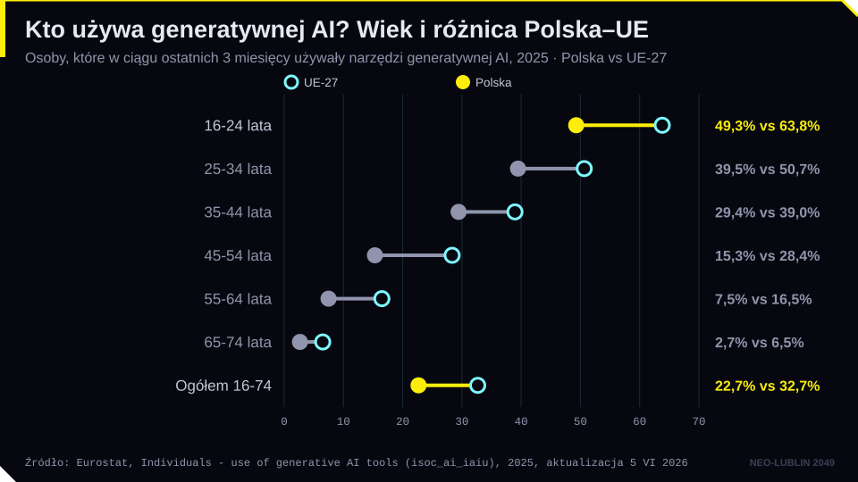
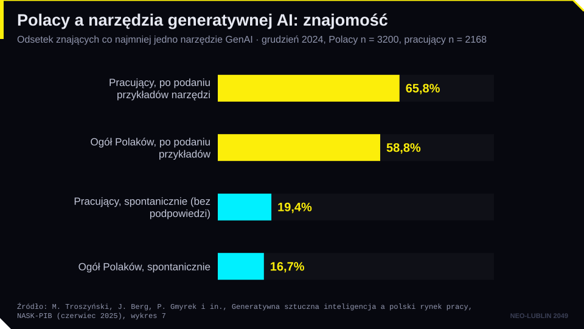
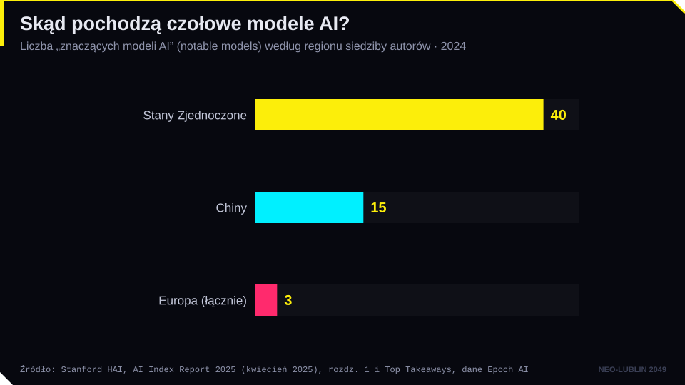
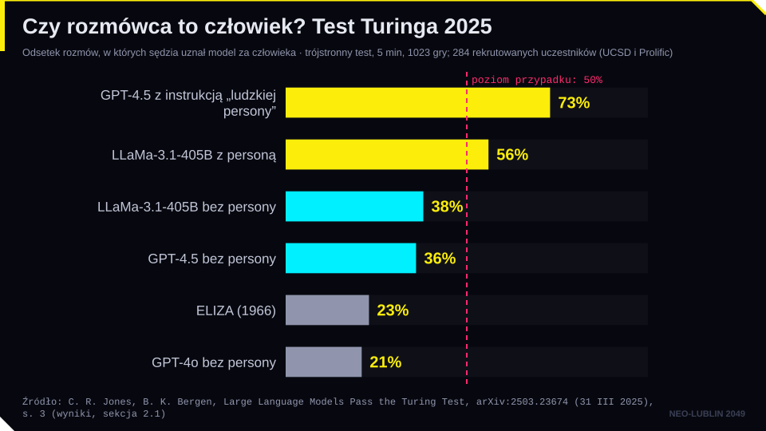
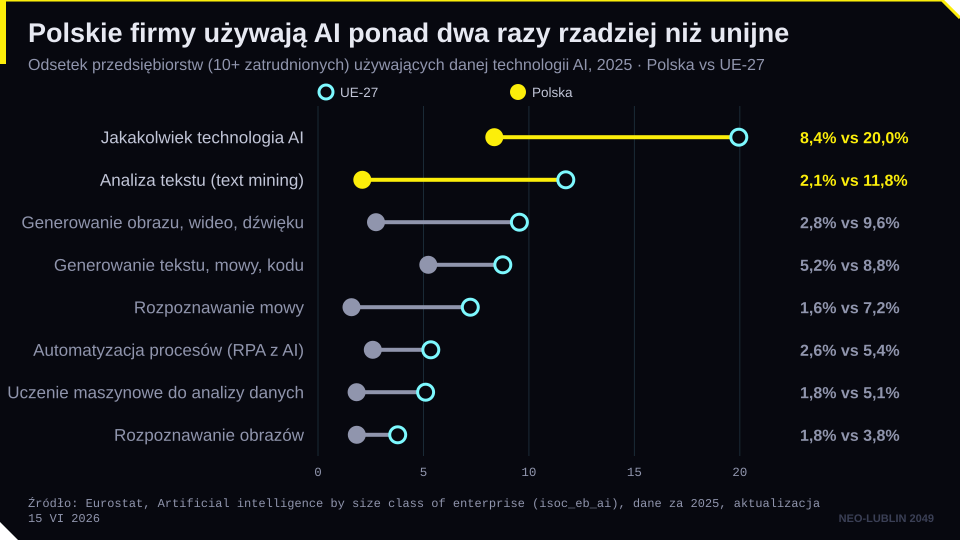

Cel modułu. Po zajęciach student potrafi: wyjaśnić, jak zaliczyć przedmiot; przytoczyć i rozłożyć na elementy definicję systemu AI z art. 3 pkt 1 AI Act; odróżnić system AI od zwykłego oprogramowania; posługiwać się podstawowymi pojęciami (model, dane treningowe, parametry, uczenie maszynowe, głębokie uczenie, NLP, AI generatywna); wyjaśnić różnicę między ANI, AGI i ASI; ocenić, co mierzy test Turinga; wskazać, czego wymaga art. 4 AI Act od podmiotów korzystających z AI, w tym od kancelarii.
Pytanie przewodnie. Kiedy program komputerowy staje się „systemem AI” i dlaczego prawnika obchodzi to bardziej niż filozofa?
1. Sprawy organizacyjne
Wykład obejmuje dziesięć tematów na ośmiu spotkaniach, łącznie 15 godzin; pięć spotkań (6.11, 20.11, 27.11, 4.12.2026 i 22.01.2027) trwa do 15:00. Łączy trzy perspektywy: technologiczno-historyczną (tematy 1–3), społeczno-kulturową (4–6 i 10) oraz prawną (7–8), a temat 9 dotyczy przyszłości AI i praktyki wdrożeń.
Zaliczenie jest na ocenę. Student wybiera jedną z trzech ścieżek.
Ścieżka A: test pisemny. 20 pytań jednokrotnego wyboru (po 1 pkt) i 2 pytania otwarte (po 5 pkt), razem 30 pkt. Pytania otwarte wymagają zastosowania przepisów do krótkiego stanu faktycznego albo krytycznej oceny problemu.
Ścieżka B: projekt. Koncepcja aplikacji opartej na AI, która pomaga prawnikom w konkretnym zadaniu (np. weryfikacja sygnatur w piśmie, przegląd umów pod kątem klauzul niedozwolonych), wraz z planem wdrożenia: dokument 4–5 stron oraz załączniki: schemat działania i szkic ekranów. Projekt obejmuje problem i użytkownika, koncepcję aplikacji, analizę prawną (AI Act, RODO, tajemnica zawodowa, odpowiedzialność), ryzyka i plan wdrożenia. Pomysł trzeba uzgodnić z prowadzącym do 6 listopada 2026 r. Kryteria: koncepcja i użyteczność 30%, analiza prawna i etyczna 30%, plan wdrożenia i ryzyka 20%, źródła i redakcja 20%.
Ścieżka C: własna propozycja. Własna forma pracy związanej z tematyką kursu, np. prototyp narzędzia AI dla prawników, analiza orzeczenia lub kazusu, artykuł popularnonaukowy, podcast lub film. Propozycję z krótkim opisem i sposobem oceny trzeba zgłosić do 6 listopada 2026 r.; do pracy dołącza się krótkie omówienie pisemne ze źródłami.
Próg zaliczenia wynosi 60% we wszystkich ścieżkach (skala: 60–67% dostateczny, 68–75% dostateczny plus, 76–83% dobry, 84–91% dobry plus, 92–100% bardzo dobry). Test oraz oddanie projektu i pracy własnej odbywają się w sesji zimowej, 5–18 lutego 2027 r. (prace najpóźniej 18 lutego), a termin poprawkowy mija 28 lutego 2027 r. Obecność nie jest obowiązkowa. Aktywność na zajęciach, zadania z modelami generatywnymi i quizy na stronie kursu mogą podnieść ocenę o pół stopnia; wyniki quizów pokazuje „Karta wyników” na stronie głównej.
Na zajęciach i przy nauce wolno korzystać z narzędzi AI. Przy projekcie trzeba dołączyć oświadczenie, z jakich narzędzi i w jakim zakresie się korzystało. Autor odpowiada za prawdziwość każdego przywołanego źródła. Model językowy potrafi zmyślić orzeczenie z wiarygodną sygnaturą, a odpowiedzialność za pracę ponosi ten, kto ją podpisał. Do czatów nie należy też wklejać danych osobowych ani poufnych dokumentów. To dobra praktyka już na studiach, a w zawodzie wymóg tajemnicy zawodowej i RODO.
2. „Quo vAIdis?” Gdzie jesteśmy?
Tytuł książki Andrzeja Dragana Quo vAIdis dobrze streszcza nastrój debaty: nie wiemy, dokąd zmierzamy, i nie jesteśmy pewni, gdzie jesteśmy. Na pierwszym spotkaniu skupiamy się na drugim pytaniu.
Postęp widać najłatwiej na przykładach. Modele generujące obrazy jeszcze kilka lat temu zdradzały się źle narysowanymi dłońmi. Dziś typowe błędy przesunęły się na drobne szczegóły: wskazówki zegara, napisy, odbicia. Modele wideo tworzą sceny, które na pierwszy rzut oka wyglądają jak nagranie, choć ruch bywa fizycznie niemożliwy. To prowadzi do pytania, czy model „rozumie” świat, który pokazuje, czyli czy ma „model świata”.
Lęk przed nową technologią wiedzy nie jest nowy. W Fajdrosie Platona (274c–275b) egipski król Tamuz ostrzega wynalazcę pisma Teuta, że pismo osłabi pamięć i da ludziom tylko pozór mądrości. Na wykładzie słuchamy tego fragmentu czytanego sklonowanym głosem znanego aktora. Sam ten zabieg pokazuje, jak szybko technologia wkracza w obszary chronione prawem: głos jest dobrem osobistym (art. 23 k.c.), a treści syntetyczne podlegają obowiązkom przejrzystości z art. 50 AI Act.

Wykres z kropkami: w 2025 r. generatywnej AI używało 22,7% Polaków i 32,7% mieszkańców UE; wśród 16-24-latków 49,3% w Polsce i 63,8% w UE, a wśród 65-74-latków 2,7% i 6,5%.

Wykres słupkowy: po podaniu listy narzędzi generatywną AI zna 58,8% Polaków i 65,8% pracujących, ale spontanicznie wymienia konkretne narzędzie tylko 16,7% Polaków i 19,4% pracujących.

Wykres słupkowy: w 2024 r. instytucje z USA wytworzyły 40 znaczących modeli AI, chińskie 15, a europejskie łącznie 3.
3. Definicje sztucznej inteligencji
Dlaczego definicja sprawia kłopot? Nie ma jednej definicji inteligencji. Działa też tzw. efekt AI: to, co maszyna już umie (szachy, rozpoznawanie pisma, nawigacja), przestajemy nazywać inteligencją. Dla informatyka definicja opisuje kierunek badań. Dla prawnika definicja wyznacza zakres stosowania przepisów: od niej zależy, czy dany produkt podlega obowiązkom z AI Act.
Turing (1950). Alan Turing w artykule Computing Machinery and Intelligence („Mind” 1950) uznał pytanie „Czy maszyny mogą myśleć?” za zbyt nieostre. Zastąpił je grą w naśladownictwo, czyli testem zachowania. To podejście behawioralne: nie pytamy, czym maszyna jest, lecz co robi.
McCarthy. Nazwa artificial intelligence pochodzi z wniosku o letnią konferencję w Dartmouth (sierpień 1955; konferencja w 1956 r.). Autorzy założyli, że każdy aspekt uczenia się i inteligencji da się opisać tak dokładnie, że maszyna może go symulować. Sam McCarthy definiował później AI jako „naukę i inżynierię tworzenia inteligentnych maszyn, zwłaszcza inteligentnych programów komputerowych”.
Cztery podejścia. Podręcznik S. Russella i P. Norviga porządkuje definicje według dwóch osi: czy chodzi o myślenie, czy o działanie, i czy wzorcem jest człowiek, czy racjonalność. Współczesna informatyka i prawo wybierają głównie podejście „racjonalnego agenta”, czyli systemu, który działa, by osiągnąć cel.
OECD. Zalecenie Rady OECD w sprawie sztucznej inteligencji (2019) zawiera definicję systemu AI, zaktualizowaną w listopadzie 2023 r. Według niej system AI to system maszynowy, który dla wyraźnych lub dorozumianych celów wnioskuje z danych wejściowych, jak generować wyniki, takie jak predykcje, treści, zalecenia lub decyzje, mogące wpływać na środowisko fizyczne lub wirtualne. Systemy różnią się poziomem autonomii i zdolności adaptacji. Na tej definicji oparto definicję unijną.
AI Act. Zgodnie z art. 3 pkt 1 rozporządzenia (UE) 2024/1689 „system AI” oznacza system maszynowy, który został zaprojektowany do działania z różnym poziomem autonomii po jego wdrożeniu oraz który może wykazywać zdolność adaptacji po jego wdrożeniu, a także który – na potrzeby wyraźnych lub dorozumianych celów – wnioskuje, jak generować na podstawie otrzymanych danych wejściowych wyniki, takie jak predykcje, treści, zalecenia lub decyzje, które mogą wpływać na środowisko fizyczne lub wirtualne.
Komisja Europejska w wytycznych w sprawie definicji systemu AI (ogłoszonych 6 lutego 2025 r., formalnie komunikat C(2025) 5053 final) wyodrębniła z tej definicji siedem elementów:
system maszynowy;
zaprojektowany do działania z różnym poziomem autonomii;
może wykazywać zdolność adaptacji po wdrożeniu;
działa na potrzeby wyraźnych lub dorozumianych celów;
wnioskuje na podstawie otrzymanych danych wejściowych;
jak generować wyniki (predykcje, treści, zalecenia, decyzje);
wyniki mogą wpływać na środowisko fizyczne lub wirtualne.
Najważniejszy jest element piąty. Według motywu 12 zdolność wnioskowania odróżnia system AI od prostego, tradycyjnego oprogramowania i od systemów działających wyłącznie według reguł zdefiniowanych przez człowieka. Wnioskowanie obejmuje uczenie maszynowe (system uczy się z danych, jak osiągać cele) oraz podejścia oparte na logice i wiedzy (system wyciąga wnioski z zakodowanej wiedzy).
Trzeba uważać na dwa częste uproszczenia. Po pierwsze, „autonomia” nie oznacza działania bez nadzoru człowieka. Oznacza pewien stopień niezależności działań od zaangażowania człowieka. Po drugie, zdolność adaptacji po wdrożeniu nie jest warunkiem koniecznym: przepis mówi, że system „może” ją wykazywać. Model, który po wdrożeniu się nie uczy, nadal może być systemem AI.
Wytyczne Komisji wskazują przykłady systemów spoza definicji: systemy usprawniające optymalizację matematyczną, podstawowe przetwarzanie danych (sortowanie i filtrowanie baz danych, standardowe arkusze kalkulacyjne), systemy oparte na klasycznych heurystykach (np. program szachowy oparty na algorytmie minimax) oraz proste systemy predykcyjne, np. prognoza na podstawie średniej z poprzednich okresów. Wytyczne nie są wiążące; ostatecznie definicję wykłada Trybunał Sprawiedliwości UE.
Przykład. Program, który nalicza opłatę sądową według tabeli z ustawy o kosztach sądowych w sprawach cywilnych, nie jest systemem AI: wykonuje reguły zapisane przez człowieka. Model bankowy trenowany na historii kredytów do oceny zdolności kredytowej jest systemem AI, a do tego może być systemem wysokiego ryzyka (zał. III pkt 5 lit. b AI Act). Ocena zależy od techniki, a nie od nazwy produktu. „Inteligentna wyszukiwarka” orzeczeń oparta na słowach kluczowych nie wnioskuje; wyszukiwarka semantyczna oparta na modelu językowym już tak.
4. Podstawowe pojęcia
Pojęcia zawierają się w sobie jak matrioszki. Sztuczna inteligencja to cała dziedzina, także systemy ekspertowe oparte na regułach i wiedzy. Uczenie maszynowe to podzbiór AI: program nie dostaje reguł, lecz przykłady, i sam wyprowadza z nich wzorce. Głębokie uczenie to uczenie maszynowe za pomocą wielowarstwowych sieci neuronowych, które same wydobywają cechy z surowych danych (obrazu, dźwięku, tekstu). AI generatywna to modele, które tworzą nowe treści.
Model to matematyczna funkcja przekształcająca dane wejściowe w wynik. Dane treningowe to przykłady, na których model się uczy. Parametry to liczby (wagi) ustawiane podczas uczenia; duże modele językowe mają ich miliardy. Trzeba odróżniać trenowanie (uczenie modelu) od wnioskowania (inference, czyli korzystania z wytrenowanego modelu). AI Act odróżnia też model AI od systemu AI: model staje się systemem dopiero po dodaniu innych elementów, np. interfejsu użytkownika (motyw 97).
Uczenie maszynowe dzieli się na nadzorowane (przykłady z poprawnymi odpowiedziami), nienadzorowane (szukanie struktury w danych bez etykiet) i ze wzmocnieniem (uczenie przez nagrody i kary). Szczegóły omawiamy na spotkaniu 3. Już teraz warto zapamiętać konsekwencję prawną: jakość wyniku zależy od jakości i reprezentatywności danych. Dlatego AI Act wymaga zarządzania danymi w systemach wysokiego ryzyka (art. 10), a stronniczość algorytmów jest tematem spotkania 5.
Przetwarzanie języka naturalnego (NLP) obejmuje rozpoznawanie, analizę i tworzenie tekstu oraz mowy: tłumaczenie, streszczanie, klasyfikację pism, transkrypcję nagrań. Dla prawników to najważniejsza gałąź AI, bo prawo jest tekstem. Dziś głównym narzędziem NLP są duże modele językowe (LLM).
AI generatywna tworzy tekst, obrazy, dźwięk i wideo na podstawie poleceń (promptów). Jej wynik jest prawdopodobny, a nie z definicji prawdziwy. Stąd tzw. halucynacje, czyli przekonujące, ale fałszywe treści (spotkanie 3), oraz obowiązki przejrzystości z art. 50 AI Act, stosowane od 2 sierpnia 2026 r.
5. ANI, AGI, ASI. Test Turinga i jego krytyki
ANI (artificial narrow intelligence) to wąska AI, sprawna w określonym zadaniu lub grupie zadań. Wszystkie działające dziś systemy to ANI. AGI (artificial general intelligence) oznaczałaby ogólną inteligencję dorównującą człowiekowi w większości zadań poznawczych. ASI (artificial superintelligence) to według Nicka Bostroma intelekt, który znacznie przewyższa ludzi niemal we wszystkich dziedzinach. Granice są umowne. Duże modele językowe piszą, tłumaczą i programują, więc spór o to, czy są jeszcze „wąskie”, trwa (wracamy do niego na spotkaniu 9).
Test Turinga. Sędzia prowadzi rozmowę tekstową z człowiekiem i maszyną, których nie widzi. Jeśli nie potrafi wskazać maszyny, maszyna zdaje test. Turing przewidywał, że około 2000 r. przeciętny sędzia po pięciu minutach rozmowy trafnie rozpozna maszynę najwyżej w 70% przypadków.
Test ma poważne krytyki. Chiński pokój Johna Searle’a (1980): człowiek zamknięty w pokoju odpowiada poprawnie po chińsku, układając znaki według instrukcji, choć chińskiego nie zna. Z zewnątrz wygląda to na rozumienie. Searle wnioskował, że manipulacja symbolami (składnia) nie daje rozumienia (semantyki). Efekt ELIZY: program Josepha Weizenbauma (1966), który udawał psychoterapeutę za pomocą prostych reguł, budził w użytkownikach przekonanie, że ich rozumie. Ludzki osąd łatwo oszukać, bo ludzie chętnie przypisują maszynom cechy ludzkie.
W 2025 r. C. Jones i B. Bergen przeprowadzili trójstronny test Turinga (sędzia rozmawiał jednocześnie z człowiekiem i z AI). GPT-4.5 z instrukcją przyjęcia „ludzkiej persony” uznano za człowieka w 73% rozmów, czyli częściej niż prawdziwych ludzi. LLaMa-3.1-405B osiągnęła 56%, a ELIZA i GPT-4o odpowiednio 23% i 21%. Wynik pokazuje, że test mierzy zdolność do imitacji, a nie rozumienie. Model może „zdać”, bo dobrze naśladuje ludzkie słabości.

Wykres słupkowy: w trójstronnym teście Turinga GPT-4.5 z personą uznano za człowieka w 73% rozmów, LLaMa-3.1 w 56%, a ELIZĘ i GPT-4o tylko w 23% i 21%; bez persony modele dostają 36-38%.
Test Voighta-Kampffa z powieści Philipa K. Dicka Czy androidy marzą o elektrycznych owcach? (1968) i filmu Łowca androidów (1982) bada nie inteligencję, lecz reakcje empatyczne. Dziś modele potrafią przekonująco opisywać empatię, więc także to kryterium słabnie.
Odwrócony test Turinga w prawie. Prawo nie pyta, czy maszyna myśli. Pyta, czy człowiek wie, że rozmawia z maszyną. Art. 50 ust. 1 AI Act nakłada na dostawców obowiązek projektowania systemów przeznaczonych do interakcji z ludźmi tak, aby informowały o tym, że są systemami AI, chyba że jest to oczywiste. Art. 50 ust. 2 i 4 dotyczą oznaczania treści syntetycznych i deepfake’ów.
6. Zastosowania AI i kompetencje w zakresie AI
AI działa w medycynie (analiza obrazów diagnostycznych), finansach (scoring, wykrywanie oszustw), transporcie, administracji (obsługa zapytań, tłumaczenia) i na platformach internetowych (rekomendacje, moderacja treści). W praktyce prawniczej używa się jej do wyszukiwania i analizy orzecznictwa, przeglądu dokumentów i umów (due diligence), przygotowywania projektów pism i streszczeń akt, transkrypcji nagrań oraz jako asystentów w systemach informacji prawnej. Przykłady to LEX Expert AI (Wolters Kluwer, od 2025 r.), Lexis+ AI, a dla kancelarii Harvey czy CoCounsel (Thomson Reuters).
Prawnik korzystający z AI musi pamiętać o ryzykach: halucynacjach (zmyślone orzeczenia i przepisy), tajemnicy zawodowej i poufności, ochronie danych osobowych, odpowiedzialności zawodowej oraz nadmiernym zaufaniu do automatu (automation bias). Za pismo procesowe odpowiada pełnomocnik, a nie model. Przykłady sankcji za halucynowane orzeczenia omawiamy na spotkaniu 8.
Art. 4 AI Act stanowi, że dostawcy i podmioty stosujące systemy AI podejmują środki w celu zapewnienia, w możliwie największym stopniu, odpowiedniego poziomu kompetencji w zakresie AI wśród swojego personelu i innych osób działających w ich imieniu, z uwzględnieniem ich wiedzy technicznej, doświadczenia, wykształcenia i kontekstu użycia systemu. Przepis stosuje się od 2 lutego 2025 r. Rozporządzenie (UE) 2026/1744 (tzw. omnibus cyfrowy, w mocy od 27 lipca 2026 r.) złagodziło ten obowiązek. Obecnie dostawcy i podmioty stosujące „podejmują środki, które wspierają rozwój kompetencji w zakresie AI” wśród personelu, a przepis wprost zastrzega, że nie muszą zapewniać osiągnięcia określonego poziomu kompetencji przez poszczególne osoby. Obowiązek działania pozostał, zmienił się jego charakter: z obowiązku rezultatu na obowiązek starannego wspierania.
Pojęcie kompetencji definiuje art. 3 pkt 56: to umiejętności, wiedza i zrozumienie, które pozwalają dostawcom, podmiotom stosującym i osobom, na które AI ma wpływ, świadomie wdrażać systemy AI i znać ich możliwości, ryzyka oraz potencjalne szkody. Kancelaria, sąd czy urząd, który korzysta z systemu AI, jest podmiotem stosującym (art. 3 pkt 4). Musi więc zadbać o przeszkolenie osób, które z systemu korzystają.

Wykres z kropkami: w 2025 r. jakiejkolwiek technologii AI używało 8,4% polskich firm i 20,0% firm w UE; największa różnica dotyczy analizy tekstu (2,1% wobec 11,8%).
Pojęcia kluczowe
Pojęcie
Definicja robocza
system AI
system maszynowy, który z różnym poziomem autonomii, na potrzeby wyraźnych lub dorozumianych celów, wnioskuje z danych wejściowych, jak generować wyniki mogące wpływać na środowisko (art. 3 pkt 1 AI Act)
wnioskowanie
zdolność systemu do wyprowadzania wyników lub modeli z danych; odróżnia system AI od oprogramowania działającego według reguł zapisanych przez człowieka (motyw 12)
model AI
matematyczna funkcja przekształcająca dane wejściowe w wyniki; staje się systemem po dodaniu innych elementów (motyw 97)
parametry
liczby (wagi) modelu ustalane podczas uczenia
dane treningowe
przykłady, na których model uczy się wzorców
uczenie maszynowe
podejście, w którym system uczy się wzorców z danych zamiast wykonywać zapisane reguły
głębokie uczenie
uczenie maszynowe z użyciem wielowarstwowych sieci neuronowych
NLP
przetwarzanie języka naturalnego: analiza i tworzenie tekstu oraz mowy
AI generatywna
modele tworzące nowe treści (tekst, obraz, dźwięk, wideo)
ANI / AGI / ASI
wąska AI / ogólna AI na poziomie człowieka / superinteligencja przewyższająca ludzi
test Turinga
test nieodróżnialności zachowania maszyny od zachowania człowieka w rozmowie
Chiński pokój
argument J. Searle’a: manipulacja symbolami nie jest rozumieniem
podmiot stosujący
osoba lub organ, który wykorzystuje system AI, nad którym sprawuje kontrolę, poza użytkiem osobistym (art. 3 pkt 4)
kompetencje w zakresie AI
umiejętności, wiedza i zrozumienie potrzebne do świadomego korzystania z AI (art. 3 pkt 56, art. 4)
Weryfikacja
Stan prawny i dane liczbowe sprawdzono: 2026-10-19 (art. 3 pkt 1, art. 3 pkt 56 i art. 4 AI Act w brzmieniu pierwotnym oraz po zmianie rozporządzeniem (UE) 2026/1744 porównano z tekstem w Dz.Urz. UE).
Lektury i biblioteka
Obowiązkowe
Rozporządzenie (UE) 2024/1689 (AI Act): motyw 12, art. 3 pkt 1, 3, 4 i 56 oraz art. 4 (w brzmieniu nadanym rozporządzeniem (UE) 2026/1744), ok. 3 strony.
Komisja Europejska. Wytyczne w sprawie definicji systemu sztucznej inteligencji ustanowionej w rozporządzeniu (UE) 2024/1689, C(2025) 5053 final (ogłoszone 6.02.2025): pkt 1–10 (wprowadzenie i siedem elementów definicji) oraz cz. 5.2 (systemy poza definicją), ok. 12 stron.
Turing, Alan M. „Computing Machinery and Intelligence”. Mind 59, nr 236 (1950): 433–460, https://doi.org/10.1093/mind/LIX.236.433 część 1 („The Imitation Game”) i część 6 (zarzuty wobec testu), wybór ok. 12 stron. link do sprawdzenia
Dragan, Andrzej. Quo vAIdis. Kraków: Wydawnictwo Otwarte, 2025.
Fischer, Bogdan, Adam Pązik, Marek Świerczyński (red.). Prawo sztucznej inteligencji i nowych technologii 3. Warszawa: Wolters Kluwer, 2024 [rozdział o definicji AI do wskazania przez prowadzącego].
Jones, Cameron R., Benjamin K. Bergen. „Large Language Models Pass the Turing Test”. arXiv:2503.23674 (2025). [link]
Jones, Cameron R., Benjamin K. Bergen. „People Cannot Distinguish GPT-4 from a Human in a Turing Test”. arXiv:2405.08007 (2024). [link]
Kurp, Feliks. Sztuczna inteligencja od podstaw. Gliwice: Helion, 2023.
McCarthy, John, Marvin L. Minsky, Nathaniel Rochester, Claude E. Shannon. A Proposal for the Dartmouth Summer Research Project on Artificial Intelligence, 31.08.1955, http://jmc.stanford.edu/articles/dartmouth/dartmouth.pdf (dostęp 19.10.2026).
OECD. Explanatory Memorandum on the Updated OECD Definition of an AI System. OECD Artificial Intelligence Papers, nr 8 (2024), https://doi.org/10.1787/623da898-enlink do sprawdzenia
Platon. Fajdros 274c–275b (mit o Teucie i Tamuzie), w dowolnym przekładzie (np. W. Witwicki).
Weizenbaum, Joseph. „ELIZA: A Computer Program for the Study of Natural Language Communication Between Man and Machine”. Communications of the ACM 9, nr 1 (1966): 36–45.
Akty prawne i orzecznictwo
Rozporządzenie Parlamentu Europejskiego i Rady (UE) 2024/1689 z dnia 13 czerwca 2024 r. w sprawie ustanowienia zharmonizowanych przepisów dotyczących sztucznej inteligencji (akt w sprawie sztucznej inteligencji), Dz.Urz. UE L 2024/1689 z 12.7.2024: motywy 12 i 97, art. 3 pkt 1, 3, 4 i 56, art. 4, art. 50 ust. 1, art. 113.
Rozporządzenie Parlamentu Europejskiego i Rady (UE) 2026/1744 z dnia 8 lipca 2026 r. zmieniające rozporządzenie (UE) 2024/1689 (omnibus cyfrowy dotyczący AI), Dz.Urz. UE L z 24.7.2026: nowe brzmienie art. 4.
Ustawa z dnia 3 lipca 2026 r. o systemach sztucznej inteligencji, Dz.U. 2026 poz. 1003.
Zalecenie Rady OECD w sprawie sztucznej inteligencji, OECD/LEGAL/0449 (2019, zm. 8.11.2023).
E. Mollick, „Blinded by Analogies” (One Useful Thing, 23.02.2023)
po angielsku
Mollick pokazuje, że analogie, którymi opisujemy AI (m.in. „AI jako robot”), prowadzą do rozmytego myślenia, i przypomina, że błędne analogie przyczyniły się do kryzysu finansowego 2007-2008. Student wynosi z tekstu ostrożność wobec obrazowych definicji AI, także w języku prawa i debaty publicznej.
E. Mollick, „AI is not good software. It is pretty good people.” (One Useful Thing, 9.05.2023)
po angielsku
Model językowy nie zachowuje się jak zwykłe oprogramowanie: za każdym razem odpowiada inaczej, bywa nieprzewidywalny i nie wiadomo dokładnie, jak dochodzi do wyniku. Pomaga zrozumieć, dlaczego do AI nie stosuje się oczekiwań wobec „zwykłego” systemu informatycznego.
Ł. Szoszkiewicz, Wykłady i wystąpienia (spis z linkami do slajdów), 2025–2026
po polsku
Spis wykładów Szoszkiewicza; wykład inauguracyjny WPiA UAM jest tu opisany tytułem Why study law if AI already knows the provisions? i odsyła do talks/nowy-swiat/. Repozytorium: https://github.com/lszoszk/talks/tree/main/nowy-swiat
Ł. Szoszkiewicz, „#AI z perspektywy prawnika”, nagranie wideo, kanał Prawo UAM
po polsku
Nagranie z kanału Prawo UAM (https://www.youtube.com/@prawouam; kanał potwierdzony przez oEmbed). Rozmowa o AI z perspektywy prawnika; treści, długości i daty nie udało się odczytać, więc do sprawdzenia przez obejrzenie. Przynależność do serii #PrawnieRzeczBiorąc wynika tylko ze snippetu wyszukiwarki.
Czy definicja z art. 3 pkt 1 AI Act jest zbyt szeroka, zbyt wąska, czy w sam raz? Podaj przykład systemu, który według ciebie powinien podlegać regulacji, a definicja go nie obejmuje (albo odwrotnie).
Dlaczego ustawodawca unijny oparł definicję na „wnioskowaniu”, a nie na „uczeniu się” lub „inteligencji”? Co by się zmieniło, gdyby adaptacyjność była warunkiem koniecznym?
Duży model językowy „zdał” test Turinga w badaniu z 2025 r. Czy to dowód, że myśli? Jakie znaczenie prawne ma to, że ludzie nie odróżniają rozmowy z maszyną od rozmowy z człowiekiem?
Tamuz z Fajdrosa ostrzegał, że pismo da „pozór mądrości”. Czy to ostrzeżenie pasuje do czatów AI? Co z tego wynika dla nauki prawa i dla praktyki zawodowej?
Kancelaria kupuje dostęp do asystenta AI w systemie informacji prawnej. Jakie działania powinna podjąć, żeby spełnić art. 4 AI Act? Czy wystarczy jednorazowe szkolenie?
Zadanie z modelem generatywnym (praca własna)
Polecenie. Otwórz dowolny model językowy (np. ChatGPT, Claude, Gemini, Bielik) i zadaj kolejno trzy pytania:
„Podaj definicję systemu sztucznej inteligencji z art. 3 pkt 1 rozporządzenia (UE) 2024/1689, dosłownie, w polskiej wersji językowej.”
„Czy arkusz kalkulacyjny, który oblicza odsetki ustawowe za opóźnienie, jest systemem AI w rozumieniu AI Act? Uzasadnij, powołując się na motyw rozporządzenia.”
„Wymień trzy orzeczenia TSUE, w których wykładano pojęcie systemu AI z AI Act, z sygnaturami.”
Co obserwujemy.
Porównaj odpowiedź na pytanie 1 z tekstem w Dz.Urz. UE (EUR-Lex). Czy model podał tekst dosłownie? Czy coś dodał albo pominął (np. słowo „może” przy adaptacyjności)?
Czy w odpowiedzi na pytanie 2 model wskazał motyw 12? Czy jego rozumowanie jest poprawne?
Sprawdź sygnatury z pytania 3 w wyszukiwarce orzeczeń TSUE (curia.europa.eu). Czy te orzeczenia istnieją i czy dotyczą tego, co twierdzi model?
Pytania do refleksji.
Która odpowiedź była najbardziej przekonująca, a która najmniej prawdziwa? Czy to ta sama odpowiedź?
Jak model zareagował na pytanie, na które poprawna odpowiedź może brzmieć „takich orzeczeń nie ma”?
Jaką zasadę weryfikacji przyjmiesz przy korzystaniu z AI w pracy nad projektem zaliczeniowym?
Studium przypadku
Stan faktyczny. Kancelaria „Lex & Data” z Lublina wdraża trzy narzędzia:
moduł w systemie kancelaryjnym, który automatycznie oblicza terminy procesowe na podstawie dat doręczeń i tabeli terminów z k.p.c.;
narzędzie, które na podstawie modelu uczonego na tysiącach umów oznacza w projektach umów klauzule „wysokiego ryzyka” i proponuje ich przeredagowanie;
czat na stronie internetowej kancelarii, który odpowiada potencjalnym klientom na pytania o zakres usług i umawia spotkania. Czat przedstawia się imieniem „Pani Anna”.
Aplikantka zauważa, że czat w rozmowach nie informuje, że jest programem, a pracownicy korzystający z narzędzia (b) nie przeszli żadnego szkolenia.
Pytania.
Które z narzędzi (a)–(c) są systemami AI w rozumieniu art. 3 pkt 1 AI Act? Uzasadnij, wskazując elementy definicji i motyw 12.
Jaką rolę w rozumieniu AI Act pełni kancelaria wobec narzędzia (b), a jaką wobec czatu (c), jeśli kupiła go od zewnętrznego dostawcy i tylko skonfigurowała?
Czy sposób działania czatu „Pani Anna” jest zgodny z art. 50 ust. 1 AI Act? Od kiedy ten obowiązek się stosuje i kto go ponosi?
Co kancelaria powinna zrobić w zakresie kompetencji pracowników (art. 4 AI Act)? Jak zmiana wprowadzona rozporządzeniem (UE) 2026/1744 wpływa na ocenę?
Jakie ryzyka zawodowe (tajemnica adwokacka lub radcowska, RODO, odpowiedzialność za błędy) wiążą się z narzędziem (b)?
Sprawdź się
Quiz samosprawdzający. Najlepszy wynik zapisuje się tylko w tej przeglądarce (karta wyników na stronie głównej) i liczy się do aktywności; nic nie jest wysyłane. Pytania z quizu nie pojawiają się na teście zaliczeniowym.